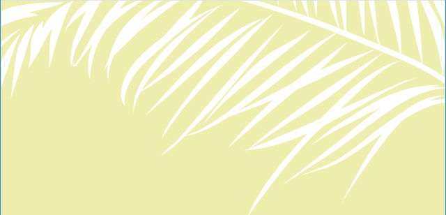

<!--
  Generated template for the BienvenidoPage page.

  See http://ionicframework.com/docs/components/#navigation for more info on
  Ionic pages and navigation.
-->
<ion-header class="bordeBajo" >
    <ion-navbar>
      <button ion-button menuToggle>
        <ion-icon name="menu"></ion-icon>
      </button>
        <div>
          
        </div>
    </ion-navbar>
  </ion-header>

<ion-content id="bienvenido_content">
    
    <span class="title3">Hasta pronto Sr. Arturo.</span>
    <div class="boton_content">
      <button ion-button full color="dark">Tap for exclusive deals.</button>
    </div>
    <span class="desc1 txt2" (click)="onclickPagePop()">back to main menu</span>
    
</ion-content>
